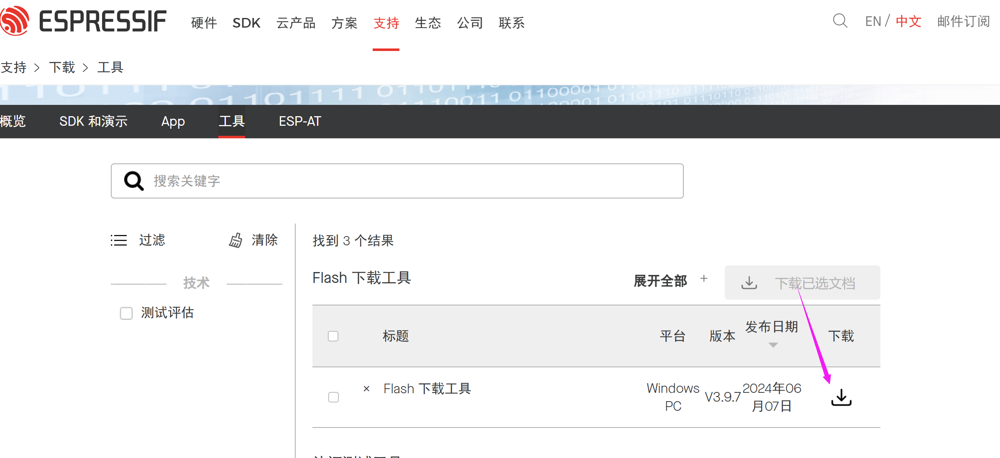
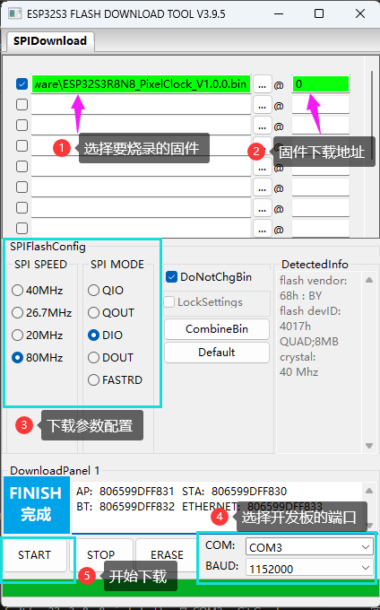
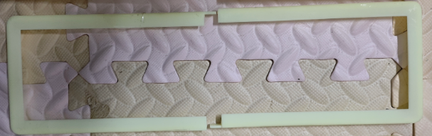

像素时钟资料下载
2024-12-05
Update history
| Date | Version | Author | Update content |
|---|---|---|---|
| 2024-12-05 | 1.0.1 | 老怪鸽 | 更新了基本文档 |
项目开源地址
如果你喜欢这个项目，鼓励鼓励，给开源项目点个⭐Star吧~
固件下载
下载地址：https://gitee.com/laoguaige/esp32-s3-r8-n8-pixel-clock/tree/master/firmware
当前固件
| 序号 | 固件名称 | 更新时间 | 备注 |
|---|---|---|---|
| 1 | ESP32S3R8N8_PixelClock_0.0.1.bin | 2024-07-28 | 包含 时钟 / 天气 / 温湿度 / 数字雨 / 音律拾音灯 |
| 2 | ESP32S3R8N8_PixelClock_0.0.2.bin | 2024-07-28 | 包含 时钟 / 天气 / 温湿度 / 数字雨 / 音律拾音灯 / WIFI配网 |
固件烧录步骤
使用乐鑫的FLASH下载器。

下载后运行。固件烧录操作如下：

烧录完成之后断电重启即可。
在PlatformIO中生成固件
3D外壳文件下载
下载地址：https://gitee.com/laoguaige/esp32-s3-r8-n8-pixel-clock/tree/master/3Dfile
3D文件说明
因为实物很大，打印的外壳需要分开，分左右两边。
LEDGrid2x.stl 为光栏，需要一个部件打两个，拼到一起；
说明：光栏一定要黑色的材质，不管是3D打印时选择黑色的材料还是后面收到喷黑漆，一定记得使用黑色的光栏！不然观感就差很多

frontFrame2x.stl 为外壳边框，需要一个部件打两个，拼到一起；

Housing.stl 和 Housing_noV.stl 为同一个部件，选择一个进行打印即可，都是成本较高，酌情打印；

如要组建完整的外壳，还需要购买黑色的亚克力透明面板！
生产的规格参数：黑茶色 透明亚克力 95×330×2mm